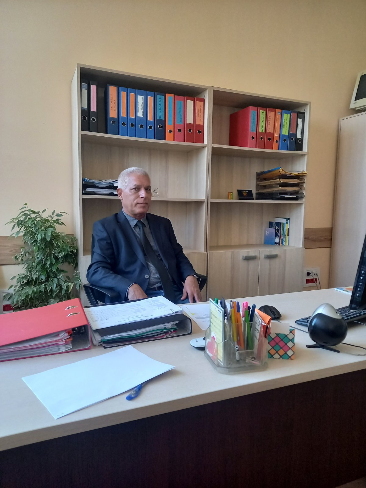

Експерт по международни отношения и Близък изток
Икономист, преподавател и преводач с дългогодишен опит в международните отношения. Проф. д. ик. н. Карим Фахир Наама е специалист в областта на международната икономика, с фокус върху арабските страни и Близкия изток. Притежава две докторски степени и е автор на значителен брой монографии, студии и статии.
Сред неговите ключови области на експертиза са оценка на международните икономически отношения, международни пазари и възникващи конфликти, както и дипломатически протокол и етикет. Проф. Наама е бил преподавател по дисциплини като "Инвестиции", "Иновации", "Арабска икономика" и други във водещи български университети.
Членства
- Член на Съюза на българските преводачи
- Член на Съюза на арабските учени
- Член на Съюза на учените в Република България
Проф. Наама е участвал в множество международни конференции и е публикувал както в България, така и в чужбина, включително в издания на арабски, английски и руски език.